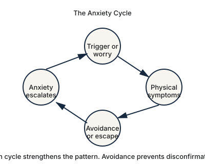

Anxiety disorders at work: functioning while struggling internally
From outside it looks like unusual dedication. Internally it may be fear.

Worrying before a major presentation is normal. Anxiety disorders are a different matter: they involve excessive fear or anxiety that interferes with daily activities, relationships, and work.
The complication in professional settings is that anxiety frequently produces behaviour that organisations reward.
When anxiety looks like ambition
An anxious professional often becomes exceptionally prepared. They arrive early. They review material repeatedly. They anticipate every question. They avoid errors at considerable cost. They are reachable at all hours and rarely take a full day off.
From outside this reads as conscientiousness, and the work produced is frequently excellent. Internally the driver may be fear rather than standards, and the difference is not visible in any output.
The organisation sees reliability. The person experiences relief that lasts until the next thing.
What it looks like day to day
- Repeatedly seeking reassurance that something was handled correctly
- Overpreparing far beyond what the situation requires
- Difficulty making decisions without more information than exists
- Rereading sent emails looking for errors
- Sleeping poorly before anything of consequence
- Physical symptoms — tension, gastrointestinal problems, headaches, a racing heart
- Avoiding presentations, networking, or visible leadership roles
- Extended worry about mistakes that others have forgotten
Generalised anxiety disorder specifically involves excessive, difficult-to-control worry alongside restlessness, fatigue, concentration problems, irritability, muscle tension, and sleep difficulty. Social anxiety disorder centres on fear of judgment in social or performance situations, which in professional life is a substantial proportion of the working day.
Avoidance is the career cost
The clearest professional consequence is rarely the anxiety itself. It is what gets declined.
A professional turns down an opportunity because it involves public speaking. Avoids roles requiring travel. Declines a promotion into visible leadership. Chooses a smaller, safer position and constructs a reasonable-sounding explanation for it.
Each decision looks defensible in isolation. Across a decade they compose a career shaped by what could be avoided rather than what was wanted.
Avoidance also strengthens the anxiety. Every time a feared situation is dodged, the relief reinforces the avoidance and the underlying prediction — that it would have been unbearable — goes untested.
Why it goes untreated in high performers
Two reasons recur. The first is that it is working, in the narrow sense: the anxiety produces preparation, the preparation produces results, and the results seem to validate the whole arrangement.
The second is that the person has never known anything else. Someone anxious since adolescence has no baseline for comparison and assumes this is simply what work feels like for everyone.
Treatment
NIMH identifies psychotherapy, medication, or both as common treatments for anxiety disorders. Cognitive behavioural therapy is a well-established approach for several of them, and exposure-based methods are specifically effective where avoidance has become central.
Exposure work is worth understanding because it is frequently misunderstood as being thrown into the feared situation. In practice it is graded, deliberate, and collaborative — approaching what has been avoided in manageable steps until the prediction is disconfirmed.
The goal is not zero anxiety
Everyone experiences anxiety, and a degree of it is useful. It sharpens preparation and flags genuine risk.
Treatment is not about eliminating every uncomfortable feeling. It is about reducing anxiety enough that it stops making decisions on the person’s behalf.
A career should be organised around goals and values rather than around a map of everything that might feel frightening.
- National Institute of Mental Health. Anxiety disorders. https://www.nimh.nih.gov/health/topics/anxiety-disorders
- National Institute of Mental Health. Health topics and publications. https://www.nimh.nih.gov/health/publications
- U.S. Equal Employment Opportunity Commission. Depression, PTSD, and other mental health conditions in the workplace. https://www.eeoc.gov/laws/guidance/depression-ptsd-other-mental-health-conditions-workplace-your-legal-rights
- American Psychological Association. Work in America 2025. https://www.apa.org/pubs/reports/work-in-america/2025
Published August 2026 · Reviewed for accuracy against the sources listed above.